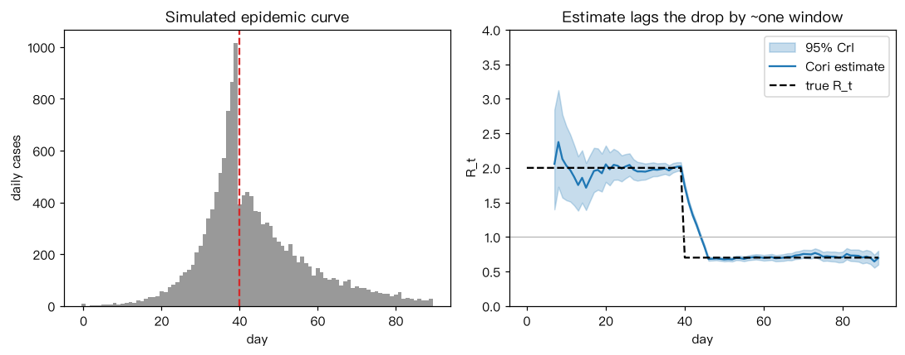

Example10 / 14
从发病曲线估计时变再生数 R_t（Cori 方法）
先用已知的 R_t（第 40 天因干预从 2.0 降到 0.7）和代际间隔分布 w_s 生成一条发病曲线（更新方程 + 泊松噪声）， 再用 Cori 等 2013 的贝叶斯估计：在长度为 τ 的滑动窗口内，R_t 的后验为 Gamma 分布， 形状 = a + Σ I_s， 速率 = 1/b + Σ Λ_s， Λ_s = Σ_{u≥1} w_u I_{s-u}（总感染力）。 解读：估计值在约一个窗口长度的滞后后跟上真实 R_t 的下降；早期病例少时可信区间很宽。
Output输出图

Output文字输出
第 10 天 真实 R = 2.0 估计 R_t = 2.03 95%CrI [1.53, 2.60] 当日病例 10 第 18 天 真实 R = 2.0 估计 R_t = 1.97 95%CrI [1.68, 2.28] 当日病例 34 第 26 天 真实 R = 2.0 估计 R_t = 2.04 95%CrI [1.88, 2.21] 当日病例 131 第 34 天 真实 R = 2.0 估计 R_t = 1.98 95%CrI [1.90, 2.07] 当日病例 441 第 42 天 真实 R = 0.7 估计 R_t = 1.32 95%CrI [1.28, 1.35] 当日病例 439 第 50 天 真实 R = 0.7 估计 R_t = 0.67 95%CrI [0.65, 0.70] 当日病例 248 第 58 天 真实 R = 0.7 估计 R_t = 0.71 95%CrI [0.67, 0.75] 当日病例 153 第 66 天 真实 R = 0.7 估计 R_t = 0.71 95%CrI [0.66, 0.76] 当日病例 78 第 74 天 真实 R = 0.7 估计 R_t = 0.75 95%CrI [0.68, 0.81] 当日病例 53 第 82 天 真实 R = 0.7 估计 R_t = 0.73 95%CrI [0.65, 0.82] 当日病例 27
Code代码
# 先用已知的 R_t（第 40 天因干预从 2.0 降到 0.7）和代际间隔分布 w_s 生成一条发病曲线（更新方程 + 泊松噪声），
# 再用 Cori 等 2013 的贝叶斯估计：在长度为 τ 的滑动窗口内，R_t 的后验为 Gamma 分布，
# 形状 = a + Σ I_s， 速率 = 1/b + Σ Λ_s， Λ_s = Σ_{u≥1} w_u I_{s-u}（总感染力）。
# 解读：估计值在约一个窗口长度的滞后后跟上真实 R_t 的下降；早期病例少时可信区间很宽。
import numpy as np
from scipy.stats import gamma as gamma_dist
rng = np.random.default_rng(3)
T = 90
s = np.arange(1, 21)
w = gamma_dist.pdf(s, a=2.5, scale=2.0); w /= w.sum() # 代际间隔：均值约 5 天
R_true = np.where(np.arange(T) < 40, 2.0, 0.7)
I = np.zeros(T); I[0] = 10
for t in range(1, T):
lam = sum(w[u - 1] * I[t - u] for u in range(1, min(t, 20) + 1))
I[t] = rng.poisson(R_true[t] * lam)
tau, a_prior, b_prior = 7, 1.0, 5.0
Lam = np.array([sum(w[u - 1] * I[t - u] for u in range(1, min(t, 20) + 1)) for t in range(T)])
for t in range(10, T, 8):
shape = a_prior + I[t - tau + 1:t + 1].sum()
rate = 1 / b_prior + Lam[t - tau + 1:t + 1].sum()
lo, hi = gamma_dist.ppf([0.025, 0.975], shape, scale=1 / rate)
print("第 %2d 天 真实 R = %.1f 估计 R_t = %.2f 95%%CrI [%.2f, %.2f] 当日病例 %d"
% (t, R_true[t], shape / rate, lo, hi, I[t]))
import matplotlib.pyplot as plt
ts = np.arange(tau, T)
sh = np.array([a_prior + I[t - tau + 1:t + 1].sum() for t in ts])
rt = np.array([1 / b_prior + Lam[t - tau + 1:t + 1].sum() for t in ts])
lo, hi = gamma_dist.ppf(0.025, sh, scale=1 / rt), gamma_dist.ppf(0.975, sh, scale=1 / rt)
fig, (ax1, ax2) = plt.subplots(1, 2, figsize=(10, 4))
ax1.bar(np.arange(T), I, color="0.6", width=1.0); ax1.axvline(40, ls="--", c="tab:red")
ax1.set_xlabel("day"); ax1.set_ylabel("daily cases"); ax1.set_title("Simulated epidemic curve")
ax2.fill_between(ts, lo, hi, color="tab:blue", alpha=0.25, label="95% CrI")
ax2.plot(ts, sh / rt, c="tab:blue", label="Cori estimate"); ax2.plot(np.arange(T), R_true, "k--", label="true R_t")
ax2.axhline(1, c="0.7", lw=0.8); ax2.set_ylim(0, 4)
ax2.set_xlabel("day"); ax2.set_ylabel("R_t"); ax2.legend(); ax2.set_title("Estimate lags the drop by ~one window")
plt.tight_layout(); plt.show()Run在浏览器中运行
首次加载 Python 环境约需 20–40 秒；可以修改参数后重新运行。